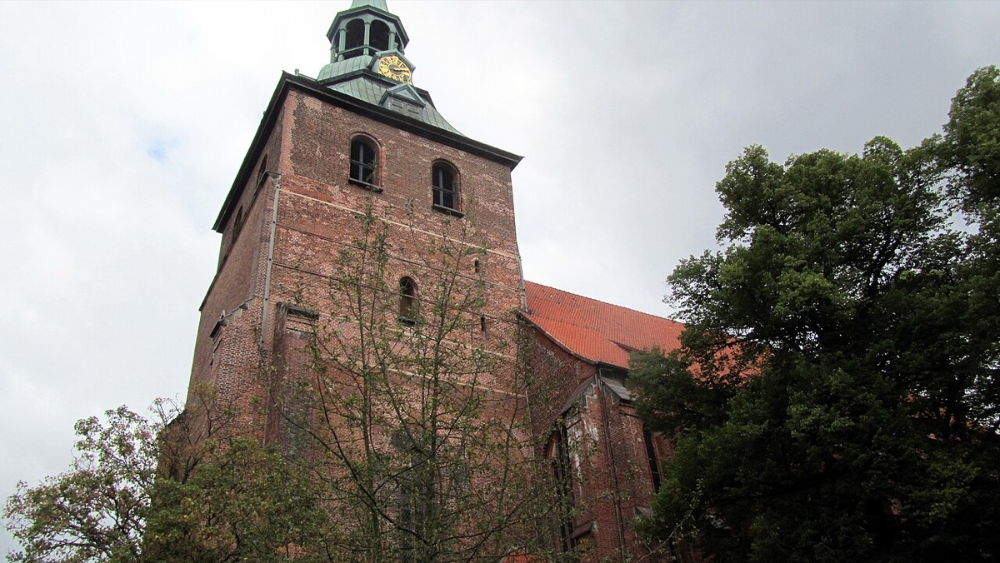

A thousand works: the St. Michael's music library

Every week of Bach's Lüneburg schooling, the folder of performing parts handed to the choir came from somewhere, and the somewhere is this card's subject. St. Michael's maintained one of the richest church-music libraries in Protestant Germany: the surviving inventories list over a thousand works by some 175 composers, a collection reaching back through the seventeenth century's masters — Schütz, Schein, the long tradition of the Lutheran motet — and forward to the moderns of the 1690s. Two centuries of the German sacred repertoire, catalogued, maintained, and above all performable: not a monument but a working stock, from which each week's music was drawn and to which it was returned.
For most of the choristers, that is all it ever was — the week's folder, sung and handed back. But this particular chorister learned by copying; it was the method he had brought with him from Ohrdruf, where the keyboard tradition had entered his hands the same way, page by borrowed page. Set a boy of that temperament loose in a library of that size and something different happens. The folder becomes a panorama. Week after week, the whole architecture of the German choral tradition passed through his voice and under his eyes — organized, sequenced by the church year, and physically in his hands. He did not read about the lineage of Lutheran church music; he sang his way down it, from Renaissance polyphony to composers still living.
What exactly he took from the shelves, the documents do not say, and this card will not pretend otherwise. What scholars presume — and the performing evidence allows no more than presumption — is that Bach's deep fluency in the older motet style was seeded here: the stile antico, the deliberately archaic manner of strict vocal polyphony, that resurfaces so strikingly in his late music, in the motets and in the opening of the Credo of the B minor Mass. The presumption is reasonable in the way that a great novelist's style is reasonably traced to adolescent reading: we cannot produce the library slips, but we know what was on the shelves, we know the boy was in the room for two years, and we know how the mature style behaves. The inference is honest as long as it is labeled one, and it is labeled one here.
Pair this card with its keyboard twin in Ohrdruf and the pattern of Bach's education locks into place: repertoire was the curriculum. There was no conservatory, no composition treatise assigned, no course in counterpoint. The boy learned what music could be by singing, playing, and copying an enormous amount of it, and then reverse-engineering the machinery — taking the works of two hundred years apart from the inside to see what made them hold. It is worth insisting on how unusual this is as the education of a supreme technician. The most learned composer in the history of Western music was, in the institutional sense, self-taught; his teachers were a thousand scores. The Craft essays of this timeline return to that fact repeatedly, because it remains the most Bach-like way to study Bach himself: analysis as intimate acquaintance, scores in the hands, understanding earned by copying rather than conferred by summary.
And it gives the late music an address. When this timeline reaches the Leipzig motets and the final contrapuntal summa, listeners and commentators will reach for the word "archaic" — music that seems to remember styles from long before its composer's birth. The memory was real, and it was acquired in a specific room: a teenager's choir loft, two hundred miles from home, in the largest music library he would ever sing from. The crowning achievements of the German sacred tradition were written by a man who had spent his adolescence inside that tradition's most complete archive, converting its holdings into himself one Sunday folder at a time. Nothing about the mature grandeur is unaccountable; the account books of his education are simply written in repertoire rather than in words.
Continue with the era essay: Lüneburg: the northern education, or leap ahead to where the seed flowered: the B minor Mass.
St. Michael's music inventory (discussed in Wolff, The Learned Musician, ch. 3)
→ full bibliography & links